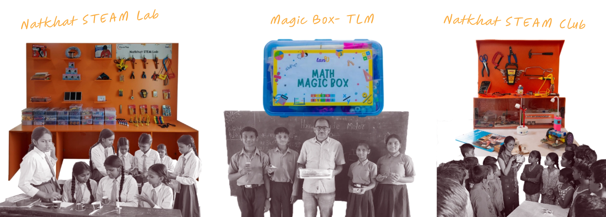
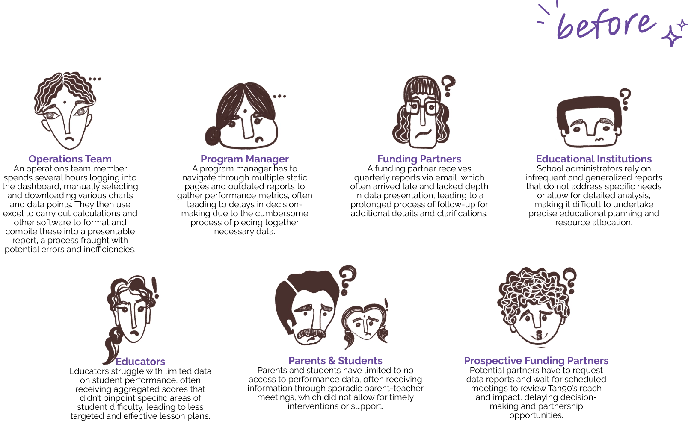
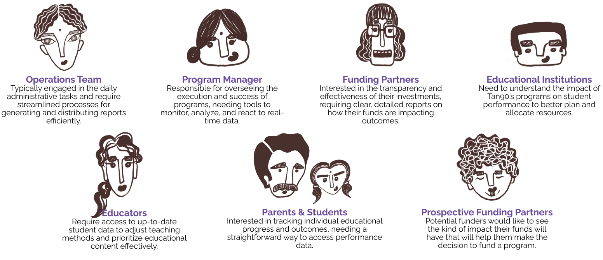
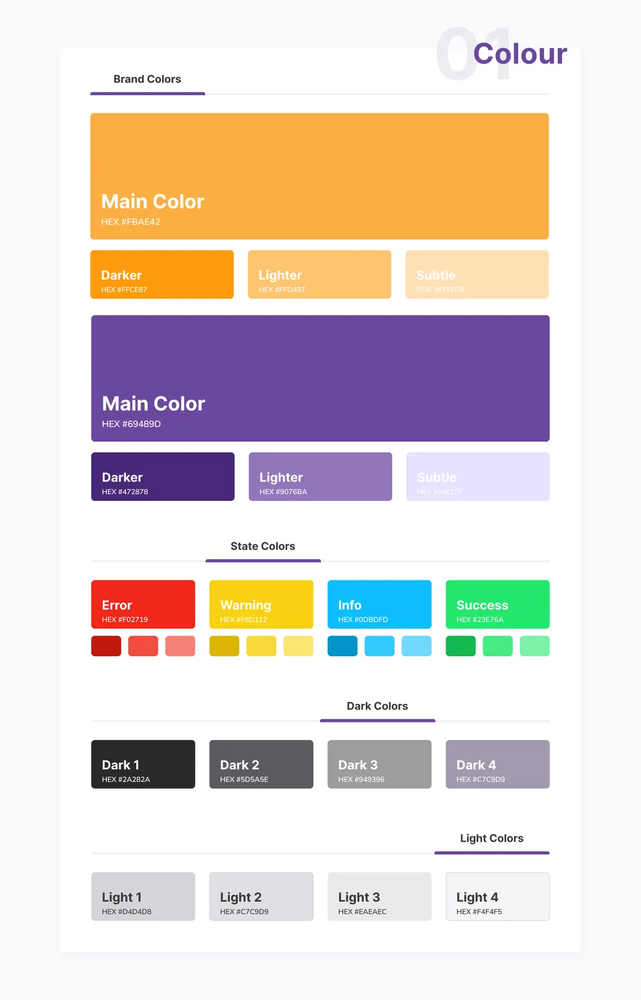
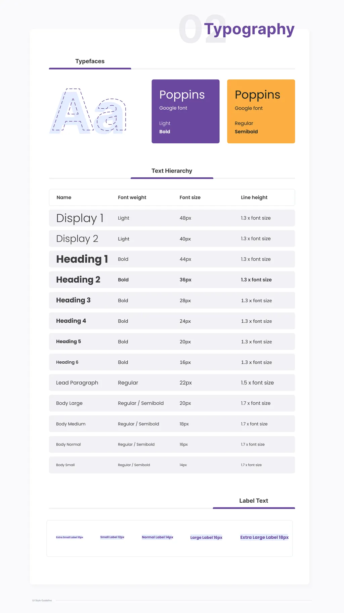
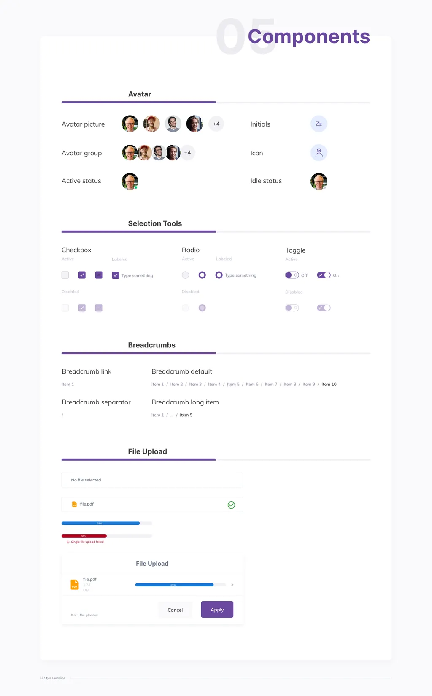
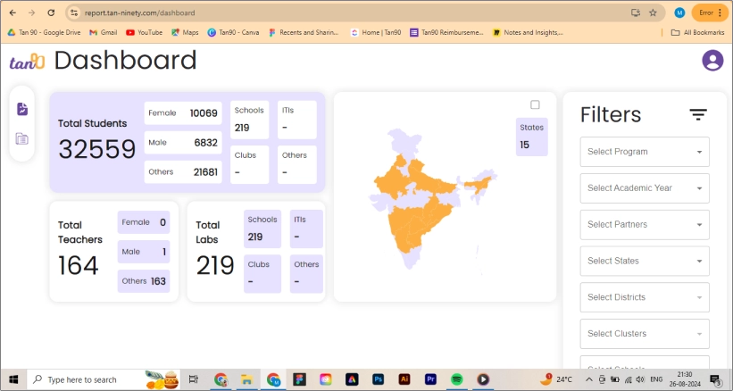
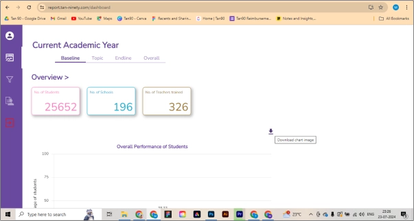
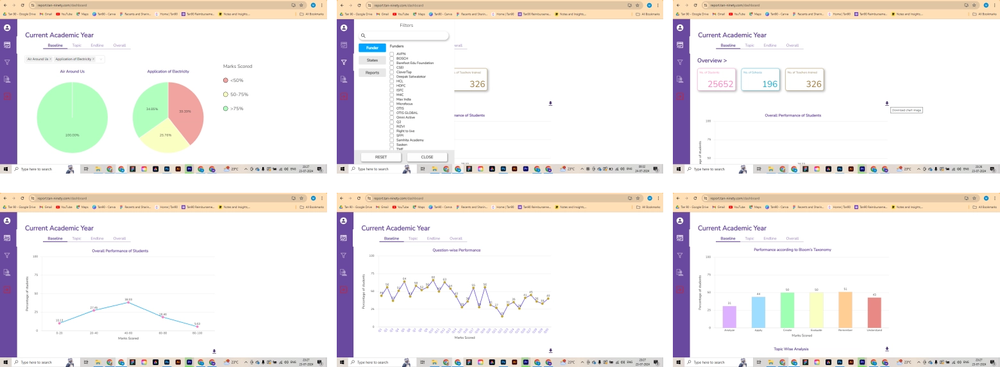
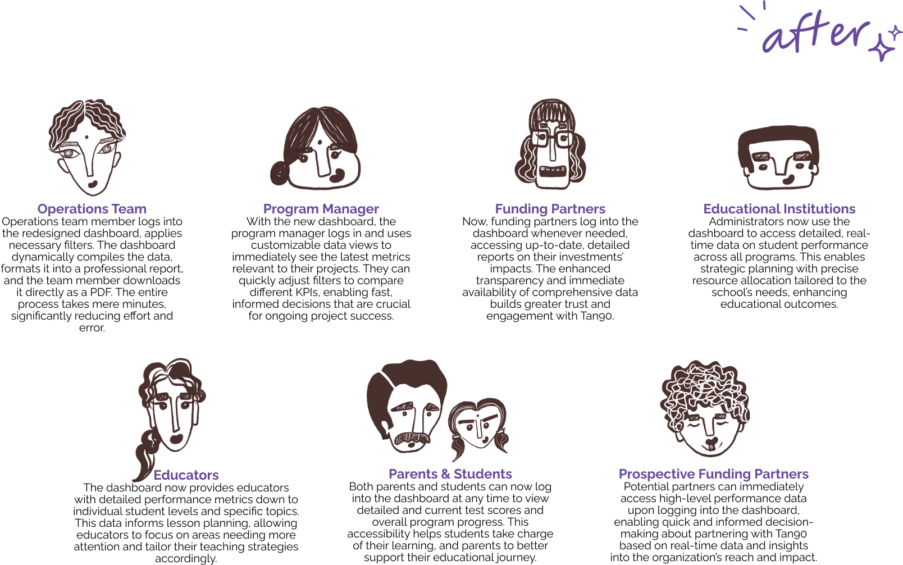

UX Design · EdTech · 2023–2024
Student Performance Dashboard
Redesigning Tan90's internal reporting tool — from a manually operated dashboard to an automated, role-specific platform serving educators, operations teams, and funding partners
The problem
Tan90 builds educational products for schools — STEAM labs, clubs, and learning kits — designed to bring hands-on learning into classrooms. Alongside the programs, they ran a student performance dashboard intended to give educators, operations staff, and funding partners visibility into outcomes.
In practice, the dashboard wasn't doing that job. The operations team spent 2–3 hours every month manually downloading charts and statistics, pasting them into pre-designed templates, and compiling reports for funders. The dashboard itself was underused — too complex, too slow, and not organized around how people actually worked.
"The manual process is tedious and slow. By the time we share reports, the data often feels outdated." — Operations Team
2–3 hrs
Spent per report cycle, manually
2.8/5
User satisfaction before redesign
Low
Adoption across stakeholder groups

My role
I led the project from research through to delivery across all three phases — responsible for the audit, stakeholder engagement, design, prototyping, usability testing, and handoff. I worked closely with the engineering team and a solutioning mentor to keep decisions grounded in what was technically feasible at each stage.
Research and discovery
Heuristic audit
I started by auditing the existing dashboard against Nielsen's heuristics — navigating it as a user, identifying where it broke down, and documenting the gap between what the product offered and what users actually needed to do their jobs.
Three problems stood out repeatedly: information overload that buried the metrics users cared about, navigation that made retrieving specific data slow and frustrating, and a reporting workflow that required entirely manual effort with no automation at any step.

The existing dashboard: dense, manually operated, and organized around data availability rather than user workflows.Stakeholder interviews and workshops
I ran interviews and collaborative workshops with the four groups who had most at stake in how the dashboard worked. Each had a different relationship with the data — and different definitions of what "useful" meant.
| Stakeholder | What they needed |
|---|---|
| Operations team | Faster, error-free workflows for generating and sharing reports |
| Program managers | Real-time visibility into program-level performance to evaluate and adjust |
| Funding partners & CEO | High-level impact metrics that clearly demonstrated outcomes |
| Engineering & solutions lead | Technically feasible increments that could integrate with existing infrastructure |

The clearest finding from stakeholder engagement: the dashboard was being used for one primary job — generating reports for funders — and that job was entirely manual. Everything else was secondary until that was fixed.
Core problem framing
How might we redesign the dashboard to eliminate manual reporting effort, improve data reliability, and make the platform relevant enough for broader stakeholder adoption?
Design approach
Rather than a single redesign launch, I structured the work in three phases — each one building on the last, each one testable before committing to the next. The phasing wasn't just a delivery strategy. It was a trust strategy: giving users something immediately useful, demonstrating it worked, then expanding from there.



A consistent visual system established across all three phases to ensure coherence as the product expanded.Phase 1
Simplify the interface for the operations team
Dynamic filtering · Key impact metrics · Streamlined navigation
The operations team was the primary user — and the most burdened one. Phase 1 focused entirely on reducing the effort required to find and use the data they needed every day.
I introduced dynamic, filter-based report generation so users could adjust views without leaving the dashboard. Key impact metrics — assessment performance, baseline vs module vs endline comparisons — were visualized through histograms, radar charts, and line charts rather than raw tables. Navigation was restructured to surface the most-used views without extra steps.

Simplified layout with dynamic filtering and visualized performance metrics — designed to reduce cognitive load and surface what the operations team needed without extra navigation.Outcomes after Phase 1
- Time savings were immediate and measurable
- Dynamic filtering removed the need for manual compilation
- Filter options were still limited for specific data views
- Users requested more visual variety in funder-facing exports
Phase 2
Automate report formatting and export
Pre-designed templates · PDF and PNG export · Automated formatting
Even with Phase 1's improvements, producing funder-ready reports still required manual work outside the dashboard. Phase 2 eliminated that last mile.
I designed pre-built monthly, quarterly, and annual report templates that automatically pulled selected metrics into professional layouts. Users could generate a ready-to-send PDF or PNG in a single action — no copying, no pasting, no reformatting. The templates were built around what funding partners actually needed to see, using the stakeholder interview findings from discovery.

Pre-designed report templates with automated data population — one action to generate a funder-ready PDF or PNG.Outcomes after Phase 2
- Templates eliminated formatting inconsistencies entirely
- Immediate time savings for the full report cycle
- Users requested branding customization (headers, logos)
- Complex datasets caused slower rendering times
Phase 3
Role-based access for broader stakeholder groups
User-specific dashboards · Real-time access · Phased rollout
With the operations workflow stabilized, Phase 3 expanded the platform outward — building role-specific dashboard views for educators, program managers, funding partners, and eventually parents and students.
Each user group saw only what was relevant to them. Educators got simplified student progress views. Program managers got real-time metrics with drill-down capability. Funding partners got impact summaries built for external presentation. The rollout was phased by user group to manage adoption carefully and address issues before the next group went live.

Tailored dashboard views for each stakeholder group — showing only what's relevant, designed around how each user makes decisions.Outcomes after Phase 3
- Educators and operations teams found tailored views intuitive immediately
- Funders praised clarity of role-specific impact data
- Parent/student views needed simpler visuals and better context
- Program managers wanted deeper drill-down for trend analysis
Overall outcomes

2 hrs → 10 min
Report cycle time end-to-end
↓ 60%
Error rate in report compilation
95%
Platform adoption across stakeholders
2.8 → 4.8
Satisfaction score improvement
Reflection
The most important decision on this project wasn't a design decision — it was the phasing strategy. A single large redesign launch would have been harder to test, harder to trust, and harder for the engineering team to absorb. Breaking it into three focused phases meant each one had a clear purpose, a measurable outcome, and a defined user group whose feedback directly shaped the next phase.
The tension I kept navigating was between what different stakeholders wanted and what would actually move the needle on adoption. Operations teams needed automation immediately — everything else was secondary until that was solved. Funders needed professional-looking reports they could share without additional formatting. Educators needed simplicity above all else. Getting the sequencing right — operations first, then automation, then broader access — was as important as the design itself.
If I revisited this project, I'd invest more time earlier in defining what "impact" meant to different stakeholders before jumping into solutions. The whiteboarding sessions were valuable, but the definition of key metrics shifted several times during Phase 1 as different users pushed back on what we'd prioritized. Getting that alignment earlier would have reduced iteration time significantly.
A dashboard that required 2–3 hours of manual work per report cycle now generates a funder-ready report in 10 minutes. The more important change was structural: shifting from a product that served data to one that served decisions — for every stakeholder group it touched.